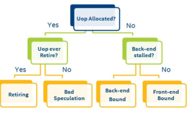

调优指南: Xeon E5 v3¶
本文更新于 2018.10.30
参考:
- Tuning Guides and Performance Analysis Papers
- Haswell-E平台调优指南(适用于Xeon E5 v3系列处理器)
- Intel Xeon Processor E5 v3 Family
1 Intel Xeon E5 v3 Family¶
架构:
处理器列表: https://ark.intel.com/products/family/78583/Intel-Xeon-Processor-E5-v3-Family
2 性能测量的复杂性¶
Xeon E5 v3系列处理器的两个特性对性能测量有重大影响:
- 超线程
- Burbo Boost 2.0
当开启这两个特性时, 测量和解读性能数据会变得更加复杂. 一些专家喜欢在关掉这些特性的情况下分析性能, 完成分析后再打开它们. 这两个特性都是可以通过BIOS设置关掉的.
3 发现性能问题¶
主要流程如下:
for each hotspot
determine efficiency
if inefficient:
determine primary bottleneck
identify architectural reason for inefficiency
optimize the issue
repeat
3.1 确定hotspot¶
What: hotspot就是程序中花费时间最多的部分
Why: 优化的主要精力应集中在这儿
为什么要优化一个只占用2%运行时间的函数呢?
How: VTune Basic Hotspots / Advanced Hotspots分析类型
3.2 确定执行效率¶
3.2.1 Efficiency Method 1: % retiring pipeline slots¶
Why: 理解代码使用处理器的效率
How: General Exploration profile, Metric: Retiring
What Now: 对于给定hotspot:
如果75%及以上的pipeline slots retiring(0.75+), 见efficiency method 3, code study 1 - 看矢量化能对否进一步提升性能
否则, 见下一步.
This metric is based on the fact that when operating at peak performance, the pipeline on this CPU should be able to retire 4 micro-operations per clock cycle (or “clocktick”). The formula looks at “slots” in the pipeline for each core, and sees if the slots are filled, and if so, whether they contained a micro-op that retired. More details on this methodology are available in the coming slides or in this paper: http://software.intel.com/en-us/articles/how-to-tune-applications-using-atop-down-characterization-of-microarchitectural-issues
What Now: 对于pipeline slots retiring<75%的hotspot, 在确定效率的时候要考虑到程序的类型. 对照下表, 如果小于对应值, 则代码是不高效的:
3.2.2 Efficiency Method 2: Changes in Cycles per Instruction (CPI)¶
- Why: 另一项效率衡量指标, 表示代码执行一条指令所花的平均时间
- How: General Exploration profile, Metric: CPI Rate
- What Now: 根据程序和平台不同, CPI值变化很大; 如果代码大小不变, 优化可关注于降低CPI
Threshold:
In the interface, CPI will be highlighted if > 1. This is a very general rule based on the fact that some well tuned apps achieve CPIs of 1 or below. However, many apps will naturally have a CPI of over 1 – it is very dependent on workload and platform. It is best used as a comparison factor – know your app’s CPI and see if over time it is moving upward (that is bad) or reducing (good!).
Note that CPI is a ratio! Cycles per instruction. So if the code size changes for a binary, CPI will change. In general, if CPI reduces as a result of optimizations, that is good, and if it increases, that is bad. However there are exceptions. Some code can have a very low CPI but still be inefficient because more instructions are executed than are needed. This problem is discussed using the Code Examination method for determining efficiency.
Additionally, CPI can be affected if using Intel® Hyper-threading. In a serial workload, or a workload with Intel® Hyper-threading disabled the theoretical best CPI on a hardware thread is 0.25 because the core can allocate and retire 4 instructions per cycle. In a workload with Intel® Hyper-threading enabled which utilizes both hardware threads effectively, the ideal CPI per-thread would be 0.5 instead of 0.25. This is because the hardware threads share allocation and retirement resources on the core.
注解
Optimized code (e.g. with AVX instructions) may actually increase the CPI, and increase stall % – but improve the performance. CPI is just a general efficiency metric – the real measure of efficiency is work taking less time.
3.2.3 Efficiency Method 3: 代码审查¶
- Why: method 1和2测量指令的执行时间. 低效的另一原因是执行了太多的指令
- How: 把VTune做为一个源码和反汇编查看器
- What Now: 不使用现代指令将增加代码大小. 下文进行了可能性分析
This method involves looking at the disassembly to make sure the most efficient instruction streams are generated. This can be complex and can require an expert knowledge of the Intel instruction set and compiler technology. What we have done is describe how to find 3 easy-to-detect code patterns and suggest how they may be implemented more efficiently using new features of the CPU.
3.2.3.1 Efficiency Method 3, Code Study 1: 将浮点或整数代码转换为AVX/AVX2¶
- Why: 使用SIMD指令可大幅提升浮点性能. 将已有浮点或整数SSE代码转为AVX指令具有很多优点
- How: 审查程序汇编代码中未对齐(not packed)SSE, MMX或浮点指令(如faddp, fmul或addss)
- What Now:
- icc: -xCore-AVX2(Linux), /QxCORE-AVX2(Windows)
- gcc: -march=core-avx2
- 优化为AVX见Intel 65 and IA-32 Architectures Optimization Reference Manual第11章
For more on AVX, see: http://software.intel.com/en-us/blogs/2011/06/13/haswell-new-instruction-descriptions-now-available/ For more on vectorization in general: http://software.intel.com/en-us/articles/vectorization-toolkit
SSE instructions will look like: addps xmm4, xmm5.
addss is a s(calar) Intel® SSE instruction – packed SSE instructions such as
addps are a better choice
3.2.3.2 Efficiency Method 3, Code Study 2: 使用Fused Multiply Add(FMA)指令¶
- Why: Hashwell中的FMA指令与FP Multiply有相同的时延. 2个新的FMA单元提供2倍于前代的峰值FLOPs/cycle
- How: 检查代码中的类似操作: r=(x*y)+z, r=(x*y)-z, r=-(x*y)+z 或 r=-x(x*y)-z 然后查看生成的汇编代码是否使用了FMA指令. FMA指令开头字母是VFM(如VFMADD123PD或VFMSUBADD132PD)或VFNF(如VFNMADD132PD)
- What Now:
- 让编译器生成FMA指令
- icc: -fma或/Qfma with CORE-AVX2及更高选项 -x或/Qx, 或-march或/arch
- gcc: -xfma或-march=core-avx2
Note that FMA instructions perform a multiply, add, and round. A multiply followed by an add would have 2 rounds (one after the multiply and one after the add). Since the FMA eliminates the intermediate rounding operation, results may be different when using FMAs as opposed to multiplies followed by adds. For more information, see the Intel® 64 and IA-32 Architectures Software Developer’s Manual at http://download.intel.com/products/processor/manual/325462.pdf, section 13.5.
3.2.3.3 Efficiency Method 3, Code Study 3: 使用Intel AES-NI¶
(略)...
3.3 确定主要瓶颈¶
如果上述method 1或2确定代码是不高效的, 首先确定主要瓶颈.
General Exploration中的Top-Down分层将代码对CPU的使用分为4类:
- Front-End Bound
- Back-End Bound
- Bad Speculation
- Retiring
警告
主要瓶颈在pipeline slot中有最高的比例(fraction), 应首先对其进行分析!
对于某个低效hotspot来说, 确定主要瓶颈点是首要工作. 优化主要瓶颈点以外的代码可能无法提升性能 - 最大的性能提升来自于解决最大的瓶颈. 一般来说, 如果Retiring是主要性能瓶颈, 是不错的. 见下文.
3.3.1 问题分类¶
Pipeline slot是个抽象的概念 - 它表示处理一个微操作所需的硬件资源.
在此CPU上, 每个core每个cycle有4个pipeline slots. 根据每个可用slot发生事件的不同, 性能可进行如下分类:
Note the way that this methodology allows us to classify what percentage of all pipeline slots end up in each category, for each cycle and for each core. It is possible that for a given dataset, there may be a significant percentage of pipeline slots in multiple categories that merit investigation. Start with the category with the highest percentage of pipeline slots. Ideally a large percentage of slots will fall into the “Retiring” category, but even then, it may be possible to make your code more efficient.
For a complete description of this methodology, see http://software.intel.com/en-us/articles/how-to-tune-applications-using-a-top-down-characterization-ofmicroarchitectural-issues
3.3.2 调查瓶颈点¶
确定哪一类是主要瓶颈, 然后将其所占比例与下表对比, 如果你的hot spot的%超过所示范围, 那么就可调查此类中的问题:
The distribution of pipeline slots in these four categories is very useful for developers. Although metrics based on events have been possible for many years, before this characterization there was no approach for identifying which possible performance issues were the most impactful. When performance metrics are placed into this framework, a developer can see which issues need to be tackled first. Within VTune Amplifier XE, if an issue is highlighted, it doesn’t need to be investigated unless it is from the primary bottleneck category. Fixing issues that are not within the primary bottleneck category may not improve performance.
3.4 确定低效原因¶
问题被分为几类进行分析. 对于每个可能因素, 都有几个重点信息:
- Why: 为什么要关注这个问题
- How: 使用VTune中的那些profile和metric. 如果数据被高亮, 则应对其进行调查
- What Now: 给出后续分析或优化建议, 有助于解决性能问题.
4 调优Front-End Bound¶
the Front-End of the pipeline:
- 取指令
- 将指令解码为微操作
- 每个cycle最多把4个微操作送到Back-End
Front-End issues are caused by delays in fetching code (due to caching or ITLB issues) or in decoding instructions (due to specific instruction types or queuing issues). Front-End issues are generally resolved by compiler techniques like code layout (co-locating hot code), reducing code footprint, and Profile-Guided Optimization (PGO).
4.1 Front-end latency¶
- Why: Front-end latency可导致Back-End拿不到要执行的微操作(指令饥饿)
- How: Front-End latency子类, Metrics: ITLB Overhead, ICache Misses, Length-Changing Prefixes
- What Now: 使用更好的代码布局和生成技术:
- 使用编译器自带的PGO
- 使用链接排序技术(微软链接器: /ORDER, gcc: 链接器脚本)
- 使用减小代码大小的开关, 如/O1或/Os
- 对于动态生成的代码, 尝试co-locating hot code, 减小代码大小, 及避免间接调用
5 调优Back-End Bound¶
the Back-End of the pipeline:
- 从Front-End接收微操作
- 对其进行必要的调整, 以将其调度到执行单元中执行
- 从内存中取需要的操作数
- 执行操作
- 提交结果到内存

The back-end is the most common category for hotspots, and is most likely to be the primary bottleneck.
注解
The metrics L3 Bound, DRAM Bound, Memory Bandwidth, and Memory Latency are only available if the collection was run on a machine with Intel Hyper-Threading Technology disabled
5.1 Cache Miss¶
Why: cache miss会增大CPI. 关注2级和3级缓存miss造成的高延迟数据访问
How: Memory Bound子类, Metrics: L3 Latency, Local DRAM
What Now: 考虑减小miss:
- 修改算法, 减小数据存储
- 将数据访问分块化(block)以放进cache
- 检查共享问题(见Contested Accesses)
- 对齐数据以便矢量化(并告知编译器)
- 使用cacheline替换分析, 见Intel优化手册 B.3.4.2
- 使用流式store
- 使用软件prefetch
5.2 远端内存访问¶
Why: 在NUMA架构上, 从远端内存load延迟较大
How: Gereral Exploration profile, Metrics: Remote DRAM
What Now: 提高NUMA亲和性:
- 如果有线程迁移问题, 将线程与CPU核进行亲和性绑定
- 确保首次访问(不是分配)内存的是使用它的线程
- 为OpenMP使用亲和性环境
- 在可能时支持程序使用NUMA选项(如对SQL Server使用softnuma)
- 使用对NUMA有效的线程调度器(如Intel Threading Building Blocks或Intel Cilk Plus)
Malloc() or VirtualAlloc() is not touching memory. The o/s only reserves a virtual address for the request. Physical memory is not allocated until the address is accessed. Each 4K page will be physically allocated on the node where the thread makes the first reference. Note that this metric measures only remote memory (DRAM) accesses, and does not include data found in cache in the remote socket
5.3 访问竞争¶
Why: 在核间共享已修改的数据(在2级缓存)会导致数据访问延迟
How: Memory Bound子类, Metric: Contested Accesses
What Now: 定位产生HITM的代码行:
- 查找MEM_LOAD_UOPS_L3_HIT_RETIRED.XSNP_HITM_PS事件, 它将tag到产生HITM的下一条指令
- 检查代码是否有真共享或假共享, 并进行合适地修正:
- 对真共享, 减小共享需求
- 对假共享, 将变量pad到cache line边界
This metric is also called write sharing. It occurs when one core needs data that is found in a modified state in another core’s cache. This causes the line to be invalidated in the holding core’s cache and moved to the requesting core’s cache. If it is written again and another core requests it, the process starts again. The cacheline ping pong-ing between caches causes longer access time than if it could be simply shared amongst cores (as with read-sharing).
Write sharing can be caused by true sharing, as with a lock or hot shared data structure, or by false sharing, meaning that the cores are modifying 2 separate pieces of data stored on the same cacheline. This metric measures write sharing at the L2 level only – that is, within one socket. If write sharing is observed at this level it is possible it is occurring across sockets as well.
Note that in the case of real write sharing that is caused by a lock, Amplifier XE’s Locks and Waits analysis should also indicate a problem. This hardware-level analysis will detect other cases as well though (such as false sharing or write sharing a hot data structure).
5.4 数据共享¶
Why: 在核间(在2级缓存)共享clean data(read sharing)会至少在第一次(?)带来性能损失
How: Memory Bound子类, Metrics: Data Sharing
What Now: 定位产生HIT的代码行:
- 查找MEM_LOAD_UOPS_L3_HIT_RETIRED.XSNP_HIT_PS事件, 它将tag到产生HIT的下一条指令
- 检查代码是否有真共享或假共享, 并进行合适地修正:
- 对真共享, 减小共享需求
- 对假共享, 将变量pad到cache line边界
This metric measures read sharing, or sharing of “clean” data, across L2 caches within 1 CPU socket. The L3 cache has a set of “core valid” bits that indicate whether each cacheline could be found in any L2 caches on the same socket, and if so, which ones. The first time a line is brought into the L3 cache, it will have core valid bits set to 1 for whichever L2 cache it went into. If that line is then read by a different core, then it will be fetched from L3, where the core valid bits will indicate it is present in one other core. The other L2 will have to be snooped, resulting in a longer latency access for that line. This metric measures the impact of that additional access time, when the cacheline in question is only being readshared.
In the case of read-sharing, the line can co-exist in multiple L2 caches in shared state, and for future accesses more than one core valid bit will be set. Then when other cores request the line, no L2 caches will need to be snooped, because the presence of 2 or more core valid bits tells the LLC that the line is shared (for reading) and ok to serve. Thus the impact of this only happens the first time a cacheline is requested for reading by a second L2 after it has already been placed in the L3 cache. The impact of sharing modified data across L2s is different and is measured with the “Contested Accesses” metric.
5.5 其他数据访问问题: Blocked Loads Due to No Store Forwarding¶
- Why: 如果无法通过pipeline转发store的结果, 依赖的load将被block
- How: Memory Bound子类, Metric: Loads Blocked by Store Forwarding
- What Now: 查看代码并查找LD_BLOCKS.STORE_FORWARD事件. 通过此事件tag到load尝试被block的下一条指令. 定位load, 并尝试查找不能被转发的store, 它通常在前面10-15条指令内.最常见的情况是store到比load更小的内存空间. store到同样大小或更大的空间可解决store问题.
Store forwarding occurs when there are two memory instructions in the pipeline, a store followed by a load from the same address. Instead of waiting for the data to be stored to the cache, it is “forwarded” back along the pipeline to the load instruction, saving a load from the cache. Store forwarding is the desired behavior, however, in certain cases, the store may not be able to be forwarded, so the load instruction becomes blocked waiting for the store to write to the cache and then to load it.
5.6 其他数据访问问题: 4K Aliasing¶
- Why: Aliasing冲突导致不得不重新发出load
- How: Memory Bound子类, metric: 4K Aliasing
- What Now: 通过修改load的对齐修复此问题. 尝试将数据对齐到32字节, 修改输入和输出缓冲间
- 的offset(如果可能), 或对没有32字节对齐的内存使用16字节内存访问.
This occurs when a load is issued after a store and their memory addresses are offset by (4K). When this is processed in the pipeline, the issue of the load will match the previous store (the full address is not used at this point), so pipeline will try to forward the results of the store and avoid doing the load (this is store forwarding). Later on when the address of the load is fully resolved, it will not match the store, and so the load will have to be re-issued from a later point in the pipe. This has a 5-cycle penalty in the normal case, but could be worse in certain situations, like with un-aligned loads that span 2 cache lines.
5.7 其他数据访问问题: KTLB misses¶
- Why: 1级缓存DTLB load miss(hits in the STLB)导致时延问题. 需要page walk的2级缓存miss影响程序性能
- How: Memory Bound子类, Metric: DTLB Overhead
- What Now: 要解决此问题, 将数据局部性到TLB大小, 在虚拟化系统上使用扩展页表(Extended Page Table, EPT), 使用大页(仅服务器/数据库应用), 使用更好的内存分配或PGO增加数据局部性.
On target data locality to TLB size: this is accomplished via data blocking and trying to minimize random access patterns.
注解
this is more likely to occur with server applications or applications with a large random dataset
6 调优Bad Speculation¶
Speculation is when:
- A micro-operation is allowed to execute, before it is known whether that operation will retire
- Allows for greater instructio-level Parallelism in an out-of-order pipeline
Micro-operations that are removed from the Back-End most likely happen because the Front-End mispredicted a branch. This is discovered in the Back-End when the branch operation is executed. At this point, if the target of the branch was incorrectly predicted, the micro-operation and all subsequent incorrectly predicted operations are removed and the Front-End is redirected to begin fetching instructions from the correct target.
6.1 分支错误预测¶
Why: 分支错误预测导致pipeline低效, 因为执行浪费或指令饥饿(当等待取指新指令时)
How: General Exploration profile, Metric: Branch Mispredict
What Now: 尝试降低错误预测影响:
- 使用编译器选项或PGO来提升代码生成
- 手工调整代码, 比如提升(hoisting)最可能执行的分支
Note that all applications will have some branch mispredicts - it is not the number of mispredicts that is the problem but the impact.
To do hand-tuning, you need to locate the branch causing the mispredicts. This can be difficult to track down due to the fact that this event will normally tag to the first instruction in the correct path that the branch takes.
6.2 Machine Clears¶
Why: Machine clears使pipeline被flush, store buffer为空, 造成重大时延
How: General Exploration, Metric: Machine Clears
Now What: 使用指定事件确定原因:
- 如果MACHINE_CLEARS.MEMORY_ORDERING很大, 从代码级检查. 可能的原因包含4K Aliasing冲突或锁竞争
- 如果MACHINE_CLEARS.SMC很大, 原因是应避免的self-modifying code
Machine clears are generally caused by either contention on a lock, or failed memory disambiguation from 4k aliasing (both earlier issues). The other potential cause is self-modifying code (SMC).
7 调优Retiring¶
Retirement is:
- The completion of a micro-op’s execution
- if the micro-ops is the last micro-op for an instruction, it is also the completion of an instruction’s execution
- when results of an instruction’s execution are committed to the architectural state(cache, memory, etc...)

In general, having as many pipeline slots retiring per cycle as possible is the goal. Besides algorithmic improvements like parallelism, There are two potential areas to investigate for the retiring category. The first is whether vectorization can be applied to make the instructions that are retiring even more efficient. See Code Study 1 for more on this. The second is whether microcode assists can be eliminated from the instruction stream. See next 2 slides.
7.1 Microcode Assits¶
Why: Assists from the microcode sequencer can have long latency penalties.
How: General Exploration, Metric: Microcode sequencer
What Now: 使用额外的assist事件重新采样, 来确定原因:
- 如果FP_ASSIST.ANY/INST_RETIRED.ANY很高, 检查denormals. To fix enable FTZ and/or DAZ if using SSE/AVX instructions or scale your results up or down depending on the problem
- if ((OTHER_ASSIST.AVX_TO_SSE_NP*75)/CPU_CLK_UNHALTED.THREAD)或 ((OTHER_ASSIST.SSE_TO_AVX_NP*75)/CPU_CLK_UNHALTED)大于.1, 减少SSE和AVX代码之间的转换. 见 http://software.intel.com/en-us/articles/avoiding-avx-sse-transition-penalties
There are many instructions that can cause assists when there is no performance problem. If you see MS_CYCLES it doesn’t necessarily mean there is an issue, but whenever you do see a significant amount of MS_CYCLES, check the other metrics to see if it’s one of the problems we mention.
8 附加主题¶
8.1 Memory Bandwidth¶
Why: 带宽瓶颈会增加cache miss带来的时延
How: Bandwidth Analysis
What Now:
计算系统上每个socket的最大理论内存带宽(GB/s):
<MT/s> *8Bytes/clock*<num channel>)/1000
运行带宽分析. 如果每个socket的总带宽大于75%的理论最大带宽, 程序可能 experiencing loaded (higher) latencies
如果合适, 进行系统调优调整(升级/平衡DIMMs, 禁用HW prefetchers)
尽可能减少带宽占用: 去掉不高效的SW prefetch, 修改算法以减小内存存储/共享, 减少数据更新, 以及平衡socket间的数据访问
Max theoretical bandwidth, per socket, for processor with DDR 1600 and 4 memory channels: 51.2 GB/s
8.2 TSX Exploration¶
Intel® Transactional Synchronization Extensions (Intel® TSX) provide hardware transactional memory support. They expose a speculative execution mode to the programmer to improve locking performance. For more detailed information about developing software with Intel TSX see http://www.intel.com/software/tsx.
A large percentage of aborted cycles may represent a negative performance impact from the use of Intel TSX. Use this Analysis Type along with other performance metrics like elapsed time, CPI, or Retiring Percentage to measure how Intel TSX is affecting your performance.
For known issues with Intel® TSX see the Haswell Specification here: http://www.intel.com/content/dam/www/public/us/en/documents/specificationupdates/ 4th-gen-core-family-desktop-specification-update.pdf
For a detailed description of Intel® TSX performance recommendations, see Chapter 12 of the Intel® 64 and IA-32 Architectures Optimization Reference Manual.
8.3 Multiplexing Reliability¶
The General Exploration analysis type multiplexes hardware events during collection, which can result in imprecise results if too few samples are collected. The MUX Reliability metric represents a confidence level in the metrics for a given row in the grid. The metric ranges from 0 to 1 with values above 0.9 representing a high level of confidence. If MUX Reliability is low for your area of interest, consider increasing the runtime of the analysis or allowing multiple runs via the project properties.